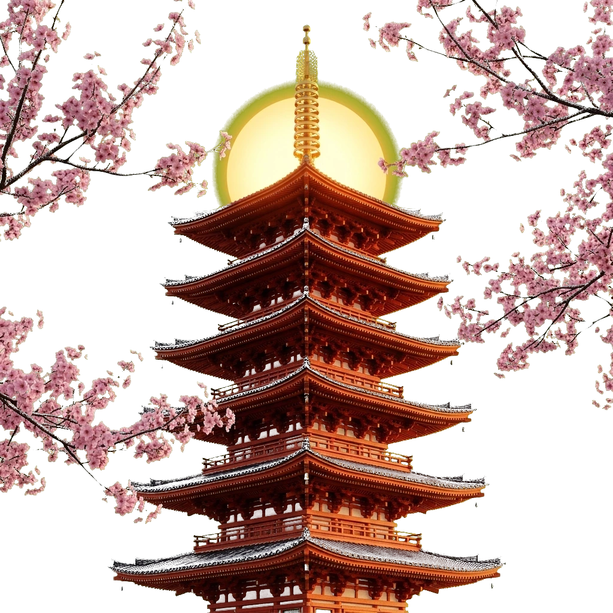

JAPAN
in Japan
itinerary
of photos
ramen
the vibe

ABOUT THE TOUR
We've planned a simple and convenient 10-day itinerary for your trip to Japan. You'll visit three iconic cities: Osaka, Kyoto, and Tokyo.
No need to worry about Shinkansen routes, schedules, or finding hidden temples — everything is already organized so you can simply enjoy the journey.
● Days 1–3
Osaka
Dotonbori neon canal street food, Osaka Castle keep, and Shinsekai night walk.
● Days 4–6
Kyoto
Fushimi Inari torii gates at dawn, Arashiyama bamboo grove, and Gion tea ceremony.
● Days 7–10
Tokyo
Shibuya Sky sunset, teamLab Planets digital art, and Mount Fuji Chureito Pagoda day trip.
WHAT'S INCLUDED
2 bilingual cultural guides who know every hidden alley in Japan.
International round-trip flights plus Green-Car Shinkansen bullet train passes.
Private airport limousine transfers and luggage forwarding between cities.
4-star boutique hotels & Kyoto ryokan stay (2 people per room, breakfasts included).